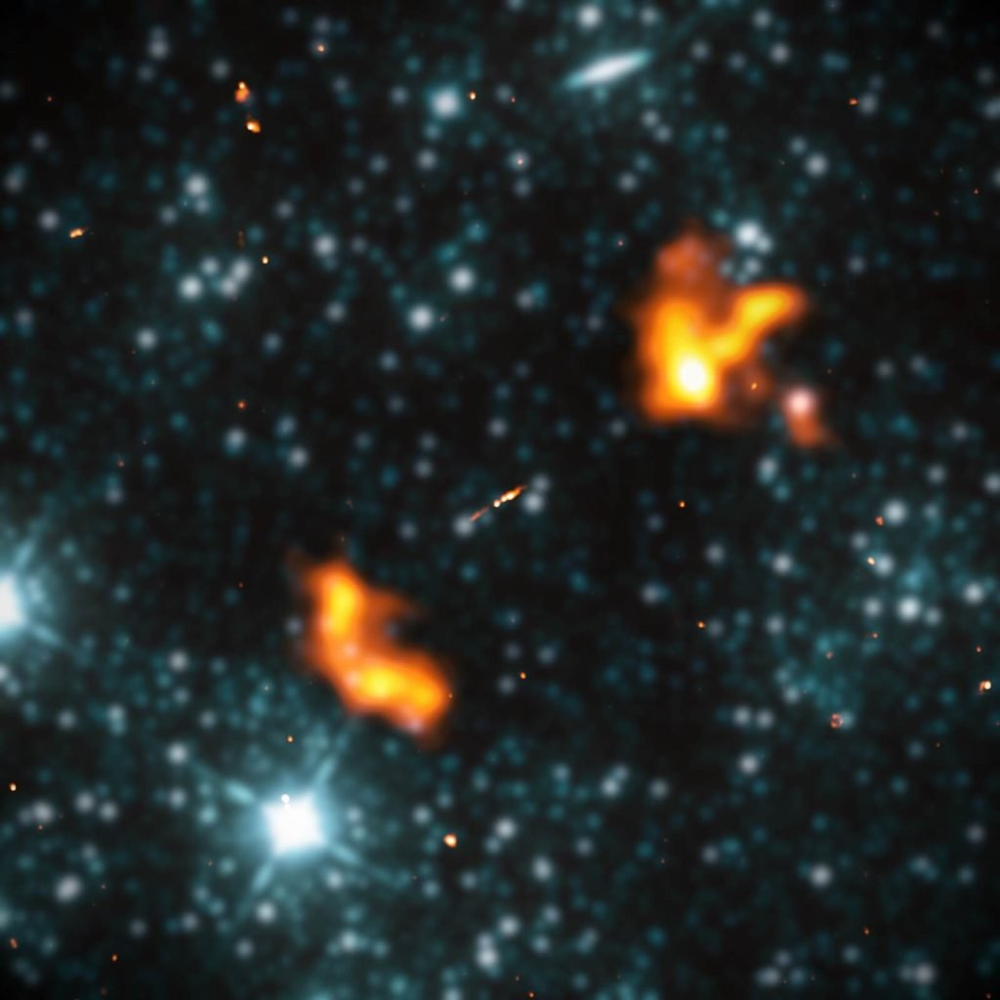

ဒီ ဂလက်ဆီဟာ အကျယ်အဝန်း အားဖြင့် အလင်းနှစ် ၁၆.၃ သန်း ကျယ်ဝန်းပါတယ်။ ဒါဟာ အခုထိ ရှာဖွေ တွေ့ရှိ ပြီးသမျှ ထဲမှာ အကြီးဆုံး ရေဒီယို ဂလက်ဆီကြီး ဖြစ်ပါတယ်။
ကြီးမားတဲ့ ဧရာမ ရေဒီယို ဂလက်ဆီ တွေနဲ့ ပတ်သက်လို့ ပညာရှင်တွေ ရေရေရာရာ သိနားလည်ခြင်း မရှိကြ သေးပါဘူး။
ဒီ ရေဒီယို ဂလက်ဆီ တွေရဲ့ အလယ် ဗဟိုမှာ ကြယ်တွေနဲ့ ဖွဲ့စည်းထားတဲ့ မိခင် ဂလက်ဆီကြီး ရှိကြပါတယ်။ ဒီ မိခင် ဂလက်ဆီကို ဝန်းရံ နေတာကတော့ ဒီ ဂလက်ဆီရဲ့ ဗဟိုချက် ကနေ တဖက် တချက်ကို ဆူထွက်နေတဲ့ ဓါတ်ငွေ့နဲ့ ဒြပ်မှုန် ပူဖေါင်းကြီး နှစ်ခုပဲ ဖြစ်ပါတယ်။
ဒီ ဓါတ်ငွေ့ ပူဖေါင်း ကြီးတွေကနေ ဂလက်ဆီ တွေကြားက ကြားခံနယ်နဲ့ ထိတွေ့တဲ့ အခါမှာ ရေဒီယို လှိုင်းတွေ ထွက်ပေါ် လာကြပါတယ်။ ဒီ ရေဒီယို လှိုင်းတွေ ထွက်ပေါ်နေတာမို့ သူတို့ကို ရေဒီယို ဂလက်ဆီ တွေလို့ အမျိုးအစား သတ်မှတ်ကြတာ ဖြစ်ပါတယ်။
ဒီ ရေဒီယို ပူဖေါင်းကြီး နှစ်ခုအပြင် ဒီ ဂလက်ဆီ တွေရဲ့ ဗဟိုကနေ အင်အား ပြင်းထန်တဲ့ ဓါတ်ငွေ့ စီးကြောင်းကြီး နှစ်ခုလဲ တဖက်တချက်ဆီကို ထွက်ပေါ် လာနေပါတယ်။ ဒီ ဓါတ်ငွေ့ စီးကြောင်းကြီး ကတော့ ဂလက်ဆီရဲ့ ဗဟိုမှာ ရှိတဲ့ မဟာ တွင်းနက်ကြီး (supermassive black hole) ကနေ ထွက်ပေါ်လာတဲ့ ဓါတ်ငွေ့ စီးကြောင်းကြီးပဲ ဖြစ်ပါတယ်။

ဒါပေမယ့် သာမန် ဂလက်ဆီ တွေနဲ့ ရေဒီယို ဂလက်ဆီတွေ မတူတာ ကတော့ ရေဒီယို ဂလက်ဆီ တွေရဲ့ ပူဖေါင်း ကြီးတွေဟာ သာမန် ဂလက်ဆီ တွေထက် အဆမတန် ပိုမို ကြီးမား ကြတာပဲ ဖြစ်ပါတယ်။ မစ်ကီးဝေးရဲ့ ရေဒီယို ပူဖေါင်းဟာ အရွယ်အစား အားဖြင့် အလင်းနှစ် ၅၀,၀၀၀ ခန့်ပဲ ရှိပါတယ်။ ဒါပေမယ့် ရေဒီယို ဂလက်ဆီ တွေရဲ့ ပူဖေါင်းကတော့ အလင်းနှစ် သန်းနဲ့ချီပြီး ရှိကြပါတယ်။ အခု ရှာတွေ့တဲ့ ဂလက်ဆီရဲ့ ရေဒီယို ပူဖေါင်းဟာ အလင်းနှစ် ၁၆ သန်း ကျော်တာမို့ မစ်ကီးဝေးရဲ့ ရေဒီယို ပူဖေါင်း အရွယ်ထက် အဆမတန် ပိုမို ကြီးမားနေပါတယ်။
အခုထိ သိပ္ပံ ပညာရှင် တွေဟာ ဘာ့ကြောင့် ကြီးမားတဲ့ ရေဒီယို ဂလက်ဆီတွေ ဖြစ်ပေါ်လာ ကြသလဲဆိုတာ အဖြေရှာ မရကြ သေးပါဘူး။ ဒါပေမယ့် ဒီလို ကြီးမားတဲ့ ရေဒီယို ပူဖေါင်းကြီး ဖြစ်ပေါ်လာ စေတဲ့ အကြောင်း တခုခု ရှိရမယ်လို့ ပညာရှင် တွေက ယုံကြည်ကြ ပါတယ်။
အချို့ကလဲ ဒီလို ဖြစ်ပေါ်လာ စေတာ မိခင် ဂလက်ဆီ အတွင်းက ထူးခြားတဲ့ ဖွဲ့စည်းပုံကြောင့် မဟုတ်ပဲ ဒီ ရေဒီယို ဂလက်ဆီတွေ ရှင်သန်ရာ သဘာဝ ပတ်ဝန်းကျင်ရဲ့ ထူးခြားမှု ကြောင့်လို့ ယူဆ ကြပါတယ်။
အခု ရေဒီယို ဂလက်ဆီ ကြီးကို ကမ္ဘာအနှံ့ မှာ ဖြန့်ကျက်ထားတဲ့ ရေဒီယို စလောင်း အချပ် ၂၀,၀၀၀ ကျော်ကို အသုံးပြု ပြီး ရှာဖွေခဲ့ ကြတာ ဖြစ်ပါတယ်။ ရရှိလာတဲ့ အချက်အလက် တွေကို ကွန်ပြူတာထဲ ထည့်သွင်းပြီး ပုံဖော် ခဲ့ကြတာ ဖြစ်ပါတယ်။
အခု ရေဒီယို ဂလက်ဆီရဲ့ မိခင် ဂလက်ဆီကိုလဲ ပညာရှင်တွေ လေ့လာ ခဲ့ကြပါတယ်။ လေ့လာ တွေ့ရှိ ချက်တွေအရ မိခင် ဂလက်ဆီဟာ ဘာမှ ထူးခြားမှု မရှိတဲ့ သာမန် ဂလက်ဆီ တခုသာ ဖြစ်တယ်ဆိုတာ တွေ့ရှိ ခဲ့ကြပါတယ်။
မိခင် ဂလက်ဆီရဲ့ ဒြပ်ထုဟာ နေအစင်း ၂၄၀ ဘီလီယံ ပမာဏခန့် ရှိမယ်လို့ ခန့်မှန်း ရပါတယ်။ ဒီ ဂလက်ဆီရဲ့ ဗဟိုမှာ နေအစင်း သန်း ၄၀၀ ခန့် ဒြပ်ထုရှိတဲ့ ဧရာမ တွင်းနက်ကြီး တစ်စင်း ရှိပါတယ်။ ဒီ အတိုင်းအတာ တွေဟာ ရေဒီယို ဂလက်ဆီ တစင်းအတွက် ဆိုရင် သိပ်ကြီးမားတဲ့ အတိုင်းအတာ ပမာဏတော့ မဟုတ်ပါဘူး။
ဒါဆို ဒီလို သာမန် ဂလက်ဆီ တစ်စင်းကနေ ဘာ့ကြောင့် အလွန် ကြီးမားတဲ့ ရေဒီယို ပူဖေါင်းကြီး ထွက်ပေါ် လာရ တာပါလဲ။
ဖြစ်နိုင်ခြေ တစ်ခုကတော့ ဒီ ဂလက်ဆီ တည်ရှိရာ အာကာသ ဟင်းလင်းပြင် ရပ်ဝန်းဟာ သာမန်ထက် သိပ်သည်းဆ နည်းတဲ့ ရပ်ဝန်းတစ်ခု ဖြစ်နိုင်တယ်လို့ အချို့က ယူဆ ကြပါတယ်။ ဒီလို သိပ်သည်းဆ နည်းတာမို့ ဓါတ်ငွေ့ ပူဖေါင်းကြီးဟာ သာမန်ထက် ပိုပြီး ကြီးမားတဲ့ အရွယ်အစားအထိ ပြန့်ကား ထွက်လာနိုင်တာ ဖြစ်မယ်လို့ အချို့က ယူဆ ကြပါတယ်။
ဒါကလဲ တကယ်တော့ တွေးဆချက် တစ်ရပ်သာ ဖြစ်ပါတယ်။ တကယ် လက်တွေ့မှာတော့ ဘာ့ကြောင့် ဒီလောက် ကြီးမားတဲ့ ဧရာမ ရေဒီယို ဂလက်ဆီကြီး ဖြစ်ထွန်း လာရသလဲ ဆိုတာနဲ့ ပါတ်သက်လို့ ဘယ်သူမှ ကျေနပ်ဖွယ် ဖြေရှင်းချက် ပေးနိုင်စွမ်း မရှိသေး ပါဘူး။ ဒါ့ကြောင့်လဲ ဒီ ရေဒီယို ဂလက်ဆီ တွေဟာ စကြာဝဠာရဲ့ ပဟေဠိ တစ်ပုဒ်အဖြစ် ဆက်လက် တည်ရှိနေ အုံးမှာ ဖြစ်ပါတယ်။
Ref: Astronomers Spot The Biggest Galaxy Ever, And The Scale Will Break Your Brain | Science Alert